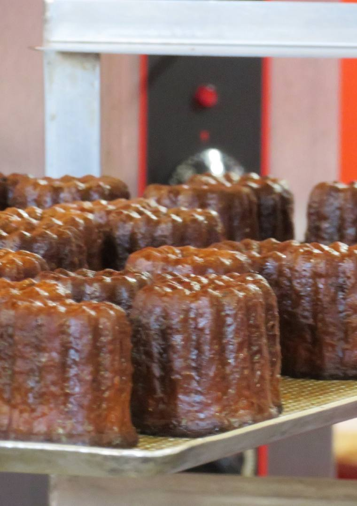

Desserts

Desserts
Cannelés bordelais
Préparation : 15 min
Repos : 24 h
Cuisson : 1 h
Ingrédients (pour 40 mini cannelés)
- ½ litre de lait
- 1 pincée de sel
- 2 œufs entiers
- 2 jaunes d’œufs
- ½ gousse de vanille
- 4 cuillères à soupe de rhum
- 100 g de farine
- 250 g de sucre en poudre
- 50 g de beurre
Quantités adaptées. Les temps de cuisson ne sont pas recalculés.
- Faire bouillir le lait avec la vanille et le beurre.
- Pendant ce temps, mélanger la farine, le sucre puis incorporer les œufs d’un seul coup, verser ensuite le lait bouillant.
- Mélanger doucement afin d’obtenir une pâte fluide comme une pâte à crêpes, laisser refroidir, puis ajouter le rhum. Placer au réfrigérateur 24 heures.
- Préchauffer le four à 270°. Verser la pâte bien refroidie dans les moules, en les remplissant jusqu’à 3 mm du bord.
- Disposer les cannelés sur la grille du four pendant 5 minutes, puis baisser le thermostat à 180° et continuer la cuisson pendant 1 heure : le cannelé doit avoir une croûte brune et un intérieur bien moelleux.
AstuceSi les cannelés se colorent trop rapidement, baisser le four à 150°.